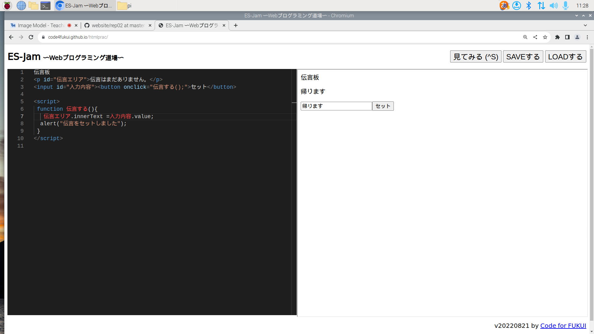

最終レポート ： 公大高専１年実習I-1
4組8番 河村継太
第3週目
3-1 JavaScript体験：伝言プログラムを作る

伝言板
1.内容
伝言板をプログラムで作成しました。文字入力ができるスペースに書かれた言葉がそのまま伝言板に表示されるプログラムです。
2.感想
ブロックプログラムとは違って自分でプログラムを打たないといけないので大変でした。スペルミスや記号の間違いがあって最初はうまく行かなかったけど最終的にはうまくできたので良かったです。今回は基礎的なプログラムだったけど日頃、よく見るものだったので裏側がしれて面白かったです。
3-2 VR体験
1.内容
VRゴーグルを装着して、vrを体験しました。
2.感想
vrで見る3Dの世界はリアルに再現されていて、下を見ると床がなかったのですこし怖かったっです。また、跳ね返ってくるボールが顔に来たときは現実と同じように驚きました。ホワイトボードに絵を書くときは真っ直ぐ線を引くことが難しかったです。
第2週目のレポート
2週目のレポート
第1週目のレポート
1週目のレポート